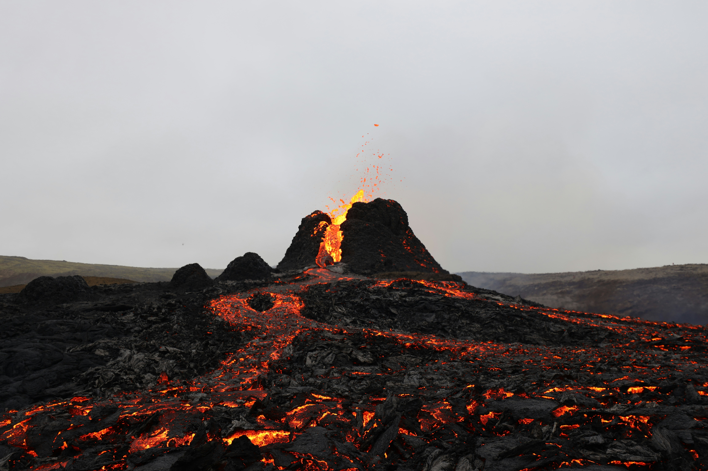
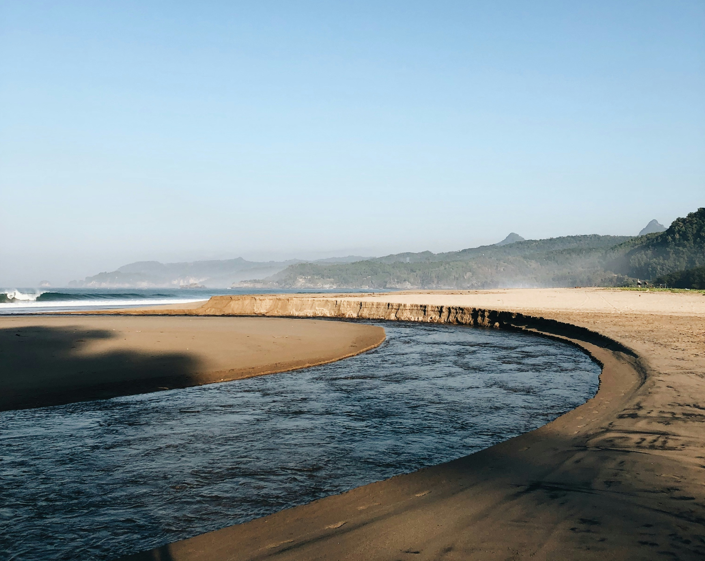
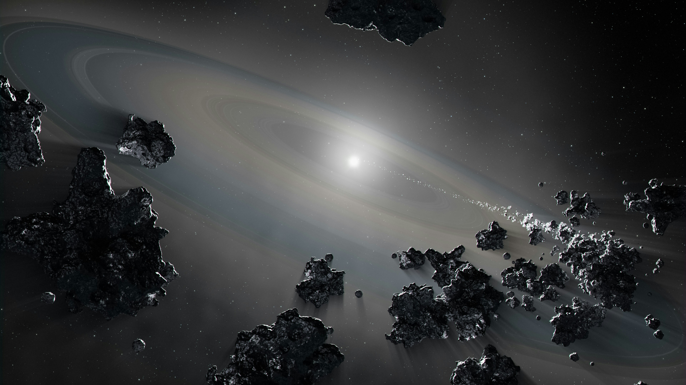

FEATURED DISCOVERY
The Hidden World Beneath Iceland
Explore the volcanic forces shaping one of Earth's most active landscapes.
Explore DiscoveryGEOSCI / EARTH SCIENCE
Discover the forces, processes and systems that shape our world.
Explore Earth
FEATURED DISCOVERY
Explore the volcanic forces shaping one of Earth's most active landscapes.
Explore Discovery


Learn how collisions between asteroids and Earth have shaped our planet's surface.
Explore article ↗RESEARCH
Explore the research and discoveries revealing how our planet works, from its deep interior to the changing landscapes on its surface.
Earth formed approximately 4.54 billion years ago, leaving a record of its history in ancient minerals and rocks.
Oceans cover approximately 71% of Earth's surface, shaping climate, ecosystems and the global water cycle.
More than 1,350 potentially active volcanoes, excluding those beneath the oceans, are recognised worldwide.
Roughly 500,000 earthquakes can be detected worldwide each year. Most are too small to be felt.
FEATURED DISCOVERY
Explore the volcanic forces shaping one of Earth's most active landscapes.
Explore Discovery